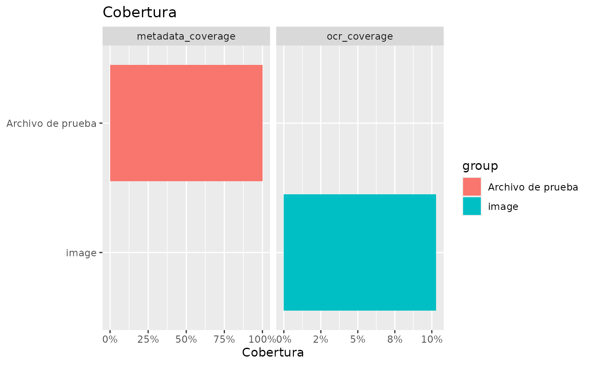

Plot corpus coverage
entropia_plot_coverage.RdPlots the output of entropia_corpus_quality() – coverage proportions per
metric and group – as a bar chart. With a single metric the chart is a
plain bar chart of the coverage proportion by group; with several metrics the
bars are faceted by metric, each panel carrying its own groups and y scale.
Arguments
- x
A data frame or tibble with
metric,groupandpctcolumns, e.g. the output ofentropia_corpus_quality().- metric
Optional character vector of metric(s) to plot, a subset of
unique(x$metric).NULL(default) plots all metrics.
Details
The y axis is labelled as a percentage. pct is NA for groups with no
total (e.g. a metric absent from a corpus); these rows receive an explicit
annotation, using status when available, instead of a misleading zero bar.
Optional group_id is displayed alongside the label; distinct IDs never
merge. Empty selections produce a Spanish no-data annotation.
Examples
q <- data.frame(
metric = c("ocr_coverage", "metadata_coverage"),
group = c("image", "Archivo de prueba"),
n = c(250L, 3L),
total = c(2428L, 3L),
pct = c(250 / 2428, 1)
)
if (requireNamespace("ggplot2", quietly = TRUE)) {
p <- entropia_plot_coverage(q)
p + ggplot2::labs(title = "Cobertura")
}
